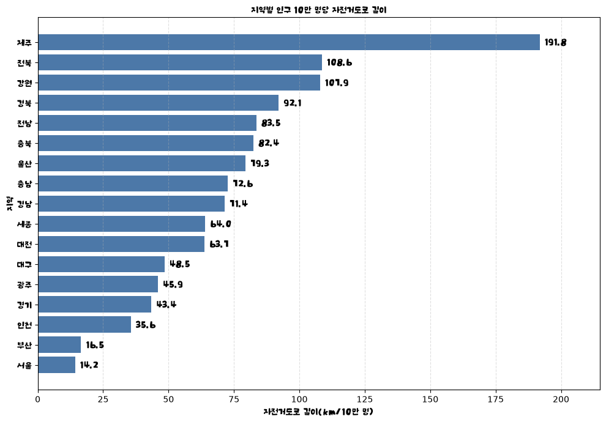
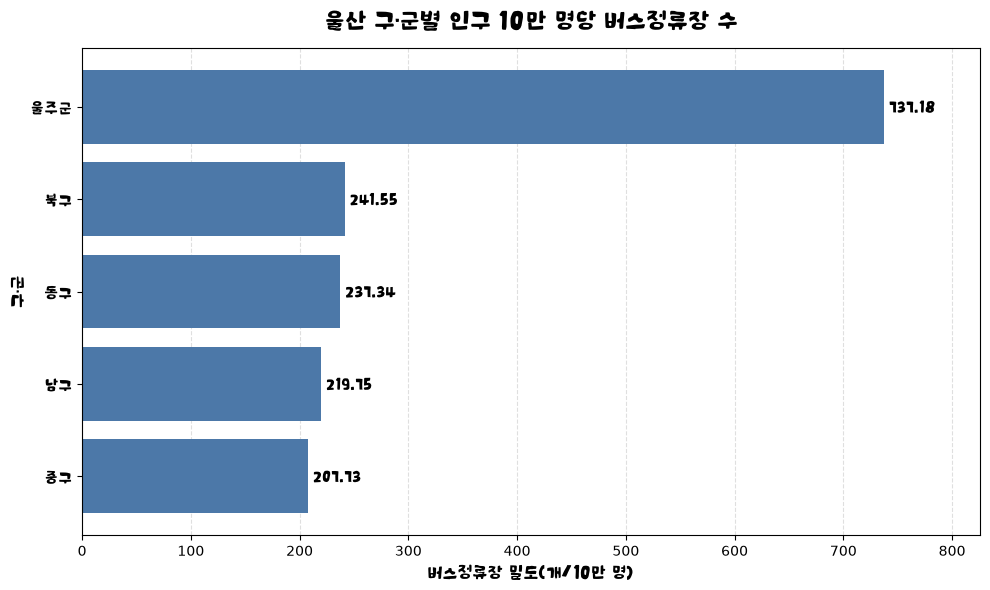
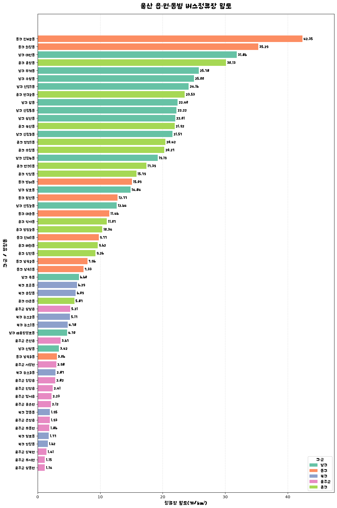

CASE STUDY · LOCAL DATA LAB
🚲 ULSAN / PUBLIC BIKE공공자전거를 놓는다면,
울산 어디부터?
도시의 이동을 데이터로 읽어보고 싶었습니다. 자전거도로의 규모를 비교하고, 버스정류장과 인구를 지도에 연결해 공공자전거 시범 운영을 검토할 생활권을 찾아봤습니다.
2023년 기준 / 겸용도로 포함
전국 시·도 / 2023년 자료
정류장 분포 · 구·군별 인구밀도
기존 분석 노트북의 결과를 정리했습니다. 자료의 기준 시점은 서로 다르며, 현재 시설 현황이나 실제 이용 수요를 나타내는 수치는 아닙니다.
01 / THE QUESTION
정류장에서 목적지까지,
자전거가 이어줄 수 있을까?
“울산에 공공자전거를 도입한다면 어디부터 시작하면 좋을까?”라는 질문에서 출발했습니다. 버스정류장과 주변 생활권을 연결하는 짧은 이동에 주목하고, 지역을 비교할 기준부터 정했습니다.
도로가 얼마나 준비되어 있을까?
지역마다 인구 규모가 다릅니다. 자전거도로의 총연장뿐 아니라 인구 10만 명당 길이를 계산해 전국 시·도를 비교했습니다.
버스와 연결할 지점은 어디일까?
정류장 좌표를 행정구역에 연결하고 면적·인구 대비 밀도를 살폈습니다. 정류장 수를 실제 승하차 인원으로 해석하지 않는 것을 기준으로 삼았습니다.
02 / DATA & PROCESS
단위와 지역 이름을 맞추는 일부터.
| 자료 | 기준 시점과 출처 | 분석에서의 역할 |
|---|---|---|
| 자전거도로 현황 | 2023년 · 행정안전부 「자전거 이용 현황」 원문 이미지를 전사한 제공 Excel | 시·도별 노선 수와 연장 비교 |
| 인구주택총조사 | 2023년 · 통계청 등록센서스 통계표 | 시·도별 인구로 도로 길이 보정 |
| 전국 버스정류장 위치 | 국토교통부 · 2025.10.31 파일 | 울산 좌표 추출, 행정구역별 정류장 집계 |
| 울산 인구 현황 | 울산광역시 · 2025.11.12 파일 | 남녀 내국인 합산, 구·군별 밀도 비교 |
| 행정구역 경계 | admdongkor · 2025.10.01 기준 | 좌표와 경계의 공간 결합, 면적 계산 |
- 읽고 정리하기Excel·CSV 읽기
지역명 대응 · 문자 인코딩 확인 - 같은 기준 만들기도로 길이 ÷ 인구
정류장 수 ÷ 면적·인구 - 지도에 연결하기좌표와 행정구역 공간 결합
지역별 집계 · 그래프·지도 - 후보 생활권 제안분석 관찰 + 지역 맥락
현장 확인과 시범 운영 제안
시·도의 긴 이름과 약칭을 대응시키고 CSV의 CP949 인코딩을 확인했습니다. 정류장 좌표는 행정구역 경계 안에 있는지 공간 결합으로 판별했습니다. 구·군과 동별 정류장 수 비교에서는 정류장 번호의 고유 개수를 사용했습니다.
분모도 구분했습니다. 전국 비교에는 2023년 총조사 인구를, 울산 내부 비교에는 2025년 자료의 내국인 수를 사용했습니다. 두 인구 수치는 같은 모집단·시점의 값이 아닙니다.
03 / FINDINGS
같은 도시도, 나누는 기준에 따라 다르게 보입니다.
① 인구에 비해 도로의 총길이는 어느 정도일까?
울산의 자전거도로 총연장 878.71km를 2023년 인구 1,107,432명으로 나누면 인구 10만 명당 약 79.3km입니다. 비교한 17개 시·도 중 7위였습니다. 다만 이 길이에는 자전거·보행자 겸용도로가 포함되어 있어, 연속된 전용도로의 길이나 주행 안전성을 뜻하지는 않습니다.

② 인구 대비 정류장이 많으면, 촘촘한 지역일까?
울주군은 인구 10만 명당 정류장 수가 737.18개로 높게 나왔습니다. 하지만 넓은 면적에 분산된 정류장일 수 있습니다. 인구 대비 지표만 보고 거점 간 거리가 가깝다고 판단하지 않고, 면적당 밀도를 함께 확인했습니다.

전하2동 42.35개/km²
화정동 35.29개/km²
분석에 포함된 읍·면·동 가운데 정류장 밀도가 가장 높았던 두 지역입니다. 중앙동도 30.13개/km²로 상위권이었습니다.
촘촘한 정류장 사이의 짧은 이동
버스와 자전거를 연결하는 후보로 검토할 수 있습니다. 실제 이동 수요가 있는지는 승하차 자료와 현장 동선을 더 확인해야 합니다.
읍·면·동별 정류장 밀도 전체 그래프 보기

04 / EXPLORE THE MAPS
숫자에서 위치로, 직접 살펴보기.
노트북에서 만든 지도를 그대로 웹에서 열어볼 수 있게 옮겼습니다. 아래 항목을 펼친 뒤 확대하거나 지도의 표시를 눌러보세요.
01 버스정류장 분포 지도 열기 · 읍·면·동별 비교
색으로 지역별 정류장 빈도를, 점으로 개별 정류장 위치를 보여줍니다. 오른쪽 위에서 레이어를 켜고 끌 수 있고, 점을 누르면 이름을 확인할 수 있습니다. 이 지도의 색상은 공간 결합된 정류장 행의 빈도입니다.
지도를 새 탭에서 크게 보기 ↗02 인구밀도 지도 열기 · 구·군별 비교
원의 면적이 클수록 구·군의 내국인 인구밀도가 높습니다. 원은 구·군을 대표하는 중심점에 표시되며, 해당 위치의 실제 인구 분포를 뜻하지는 않습니다. 원에 마우스를 올리거나 터치해 수치를 확인할 수 있습니다.
지도를 새 탭에서 크게 보기 ↗지도 배경: OpenStreetMap 기여자 · 표시 도구: Folium / Leaflet. 배경지도와 라이브러리는 인터넷 연결이 필요합니다. 정류장 지도는 약 5.5MB이며 처음 열 때 시간이 걸릴 수 있습니다.
05 / PILOT PROPOSAL
먼저 연결해 볼 생활권을 제안했습니다.
원 분석의 제안 순서는 아래와 같습니다. 밀도 분석과 지역 맥락을 바탕으로 정한 검토 순서이며, 수요 예측이나 최적화 모델이 산출한 순위는 아닙니다.
| 검토 순서 | 후보 생활권 | 제안 근거와 확인할 점 |
|---|---|---|
| 01 | 중앙동·삼산동·태화강 생활권 | 중앙동의 높은 정류장 밀도를 출발점으로, 도심과 강변을 연결하는 구상입니다. 실제 환승 동선과 자전거도로 연결을 확인해야 합니다. |
| 02 | 무거동·대현동 | 정류장 밀도가 높은 생활권입니다. 주거지·학교·상업시설 사이의 짧은 이동 수요를 추가 조사할 후보입니다. |
| 03 | 전하2동·화정동 | 면적당 정류장 밀도 상위 두 지역입니다. 근거리 이동과 버스 연계 가능성을 현장에서 확인할 후보입니다. |
작게 운영하고, 실제 이동으로 다시 판단하기.
여러 무인 대여·반납 거점을 생활권 안에 연결하고 24시간 운영을 검토합니다. 시범 운영 이후 대여·반납 건수, 시간대별 이용량, 자전거 재배치 부담을 확인해 거점과 대수를 조정하는 방향을 제안했습니다.
06 / WHAT I LEARNED
분석한 것과, 더 알아야 할 것을 구분하기.
가장 큰 배움은 분모를 바꾸면 해석도 달라진다는 점이었습니다. 총량·인구당·면적당 지표를 나란히 보고, 그래프에서 생긴 질문을 지도로 다시 확인하는 과정을 경험했습니다. Pandas로 표를 연결하는 작업에서 GeoPandas의 공간 결합과 Folium 시각화까지 확장해 봤습니다.
시설과 인구의 분포
도로 총연장, 지역별 정류장 수와 밀도, 구·군별 인구밀도를 비교했습니다. 이를 바탕으로 시범 운영을 검토할 생활권을 정리했습니다.
이용 수요와 주행 가능성
정류장별 승하차 인원, 시간대별 이동, 경사도, 도로 단절과 안전성, 이용자 설문을 더하면 후보지를 구체적인 설치 위치로 좁힐 수 있습니다.
인구 자료는 거주 내국인 수이며 유동인구가 아닙니다. 버스정류장 밀도가 높아도 자전거 이용 수요가 높다고 단정할 수 없습니다. 또한 서로 다른 시점의 자료와 전사한 통계표를 사용했으므로, 실제 사업 검토에는 최신 원자료 대조와 현장 검증이 필요합니다.
이 페이지는 「울산공공자전거제안-김정음.ipynb」의 저장된 그래프·지도·제안을 선별해 정리한 기록입니다. 전국 비교의 핵심 수치는 원자료로 다시 계산했습니다. 노트북 전체의 처음부터 끝까지 재실행은 검증하지 않았으며, import와 셀 실행 순서는 재현성을 높이기 위해 정리할 부분으로 남아 있습니다.